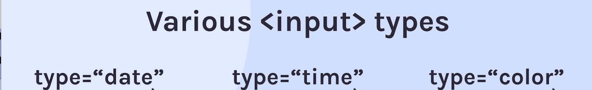

HTML
HTML is the building blocks of webpages.
To start a new project you need an index.html file. In this file you will write all of your html code. Every index.html file also need a title.
HTML elements
To make something an element you need an opening tag and a closing tag. Between the two tags is the element itself.
When you write code always write the opening tag and closing tag first. Then write the content in between.
4 really useful tags
Header
Inside here you write the websites title and you put the logo and navigation.
Your headings tell you the structure of your page. Don´t use headings for font sizes. You can do that with CSS.
You only need one h1 per webpage.
Section
Stand alone sections of content.
Footer
Here you can write copyright and terms and conditions.
And anything you are used to see at the bottom of the page.
Main
Here you write the main content of the page.
A main tag may hold several section tags.
Anchor tags
An anchor tag is simply a HTML tag with an A.
After the a you need a href attribute so the website knows where the links point to. You can point to a new html page or an external website.
If you point to an external website you want the new page in a new window. If you add a new attribute target to the anchor tag after the href attribute you can achieve this.
2 self closing tags
Img
Input
The most common input type is "text". To write text inside the input field you can use the placeholder attribute.
Paragraph text
Usually after a heading you will find some paragraph text and the p element is used for that.
HTML LISTS
Unordered list
When you write an unordered list you use the ul tag.
When you use ul tags to wrap your list you get dots on the items in the li tag.
Li tags for every list item.
- Dog
- Cat
- Rabbit
You will often find ul lists in the nav bar.
Ordered list
When you write an ordered list you use the ol tag.
When you use ol tags to wrap your list you get numbers on the items in the li tag.
- Dog
- Cat
- Rabbit
Description lists
When you write a description list you use the dl tag.
Inside a description list, you´ll find pairs of dt and dd.
SNOW MONSTERS
- Yeti
- Abominable Snowman
- An ape-like creature said to live in the Himalayas.
MYTHICAL ANIMALS
- Unicorn
- A mythical, horse-like animal with a single horn.
- Something which is desirable but difficult to obtain.
PET
- Name
- Lillefot
- Animal
- Tortoise
- Loves
- Banana